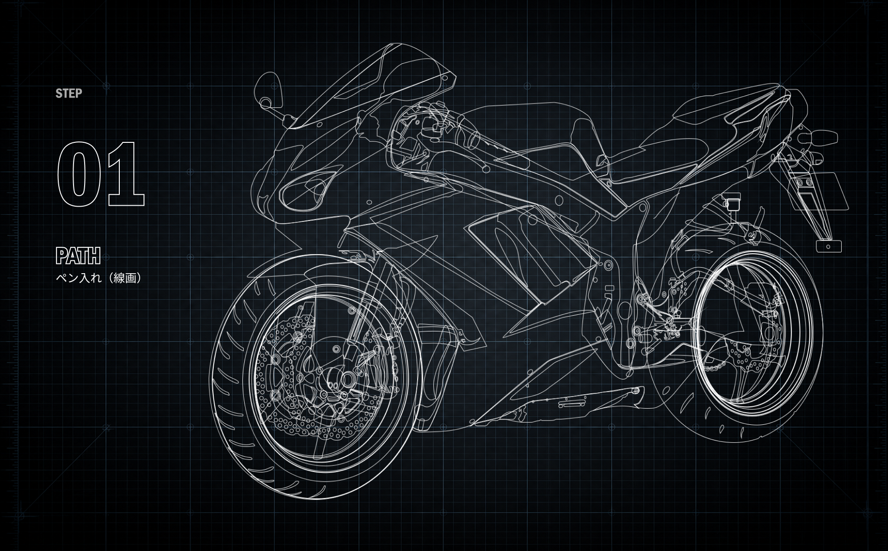
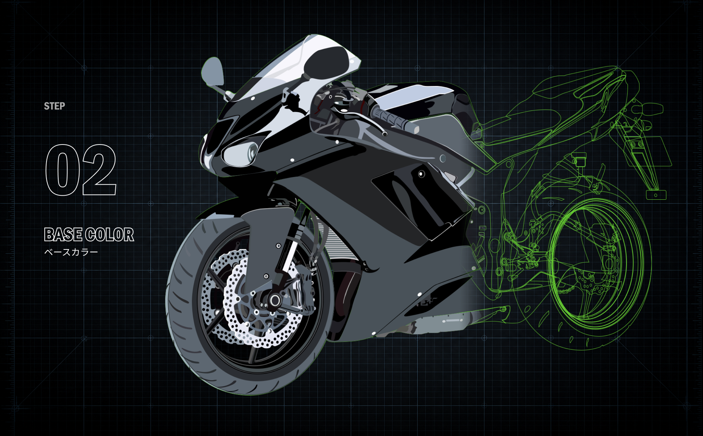
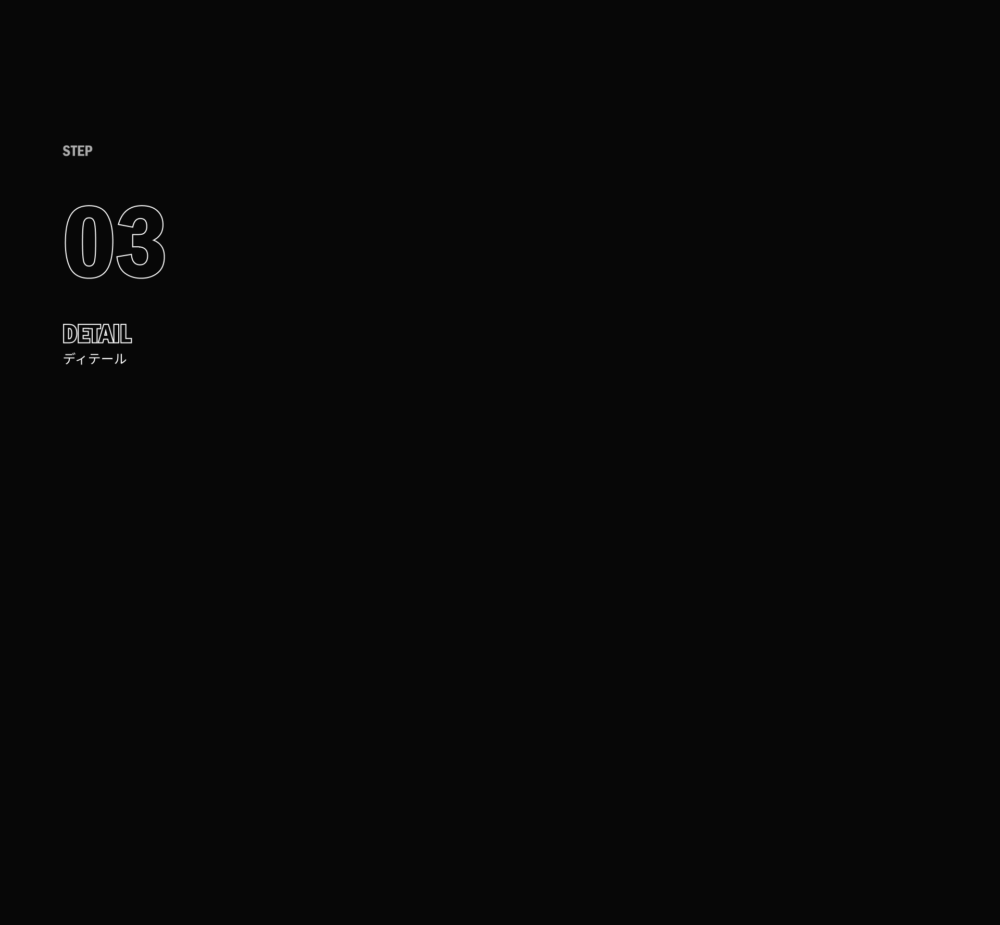
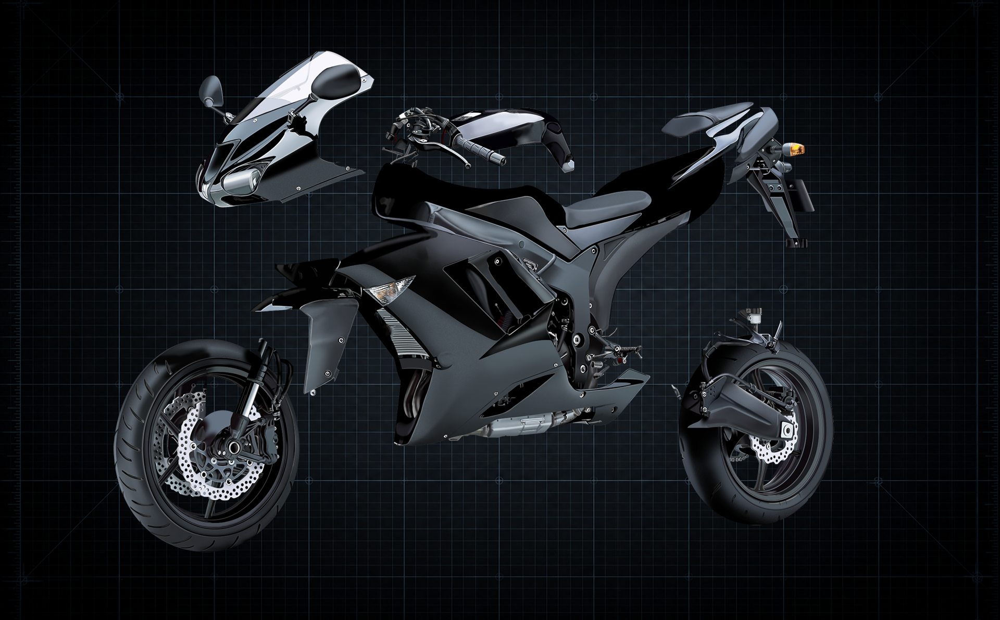
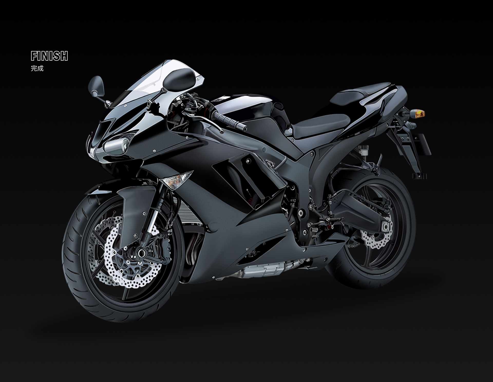

写真をベースに、ペンツールを用いて各パーツの輪郭を正確にトレースします。 輪郭やパーツの境界線を丁寧に描き分け、後工程の基礎となる線画を構築します。

線画をもとに、各パーツへ基本となる色を配置します。 素材ごとの色味や質感を意識しながら全体のバランスを整え、立体感を生み出すための土台を描いていきます。

Decomposition
パーツ分解

ベースカラーをもとに、光や影、素材感などの細部表現を加えていきます。 金属や樹脂、タイヤなど各素材の質感を描き分けることで、写実的な立体感と完成度を高めています。
